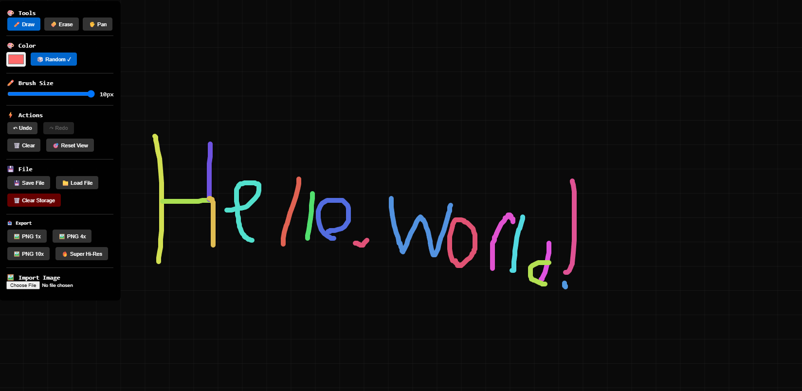
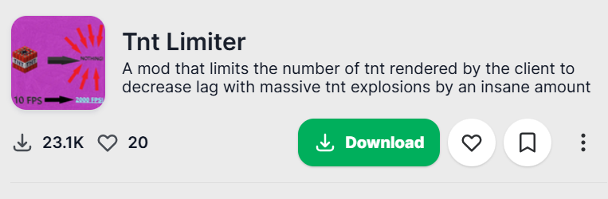
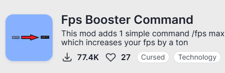
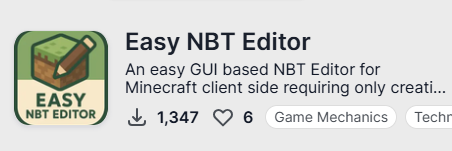

Featured Projects

Mythic Football
A currently in development Fantasy Football website with card packs and players.
View Project →
Fast C based Screen Reading Tool
A fast screen reading tool built in C with real-time reading and reaction to screen based events.
View Project →
Endless Paper Web
A web-based note-taking tool with very high zoom levels for taking notes on all levels.
View Project →
Less Than Enough Items Minecraft Mod
A Minecraft mod I developed to replace the functionality of projects like Just Enough Items after Minecraft removed client side recipe retreival. Using a new method to get and read recipes.
View Project Modrinth → View Source Github →
TNT Limiter Minecraft Mod
A Minecraft mod that limits the number of TNT explosions rendered on the client side to prevent lag while maintaing the explosion with no server side implementation needed.
View Project Modrinth →
FPS Booster Command Minecraft Mod
A Minecraft mod that was originally made as a joke but ended up having actual immense use and sky rocketed in popularity.
View Project Modrinth →
Easy NBT Editor Minecraft Mod
A Minecraft mod that provides a simple interface for editing NBT data in-game after the 1.20.5 item component update which broke other NBT editors.
View Project Modrinth →
Ultimate Essentials Minecraft Mod
A Minecraft mod that provides a comprehensive set of utilities in game based on commands to allow you to do nearly anything on the client side alone with no server side implementation. Using innovative methods to do things never before considered possible. Utilizing fully over 10k LOC this project is my largest and most impressive though it is private.
View Project Modrinth →